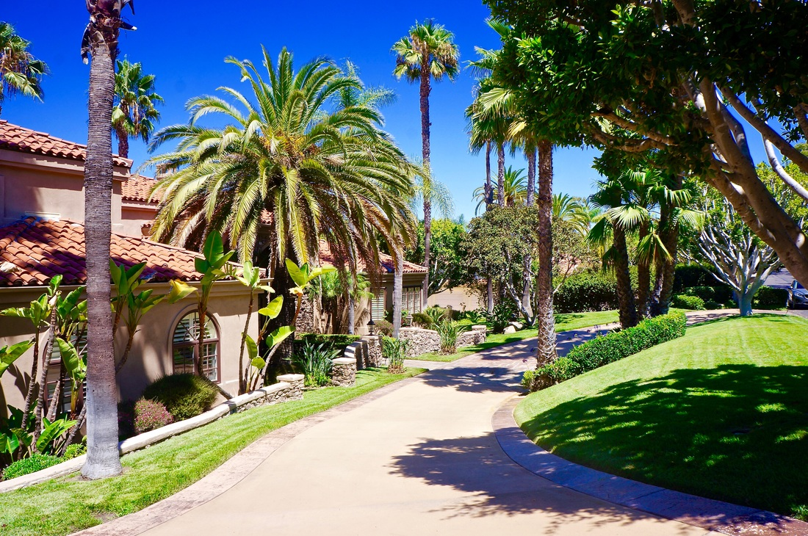

San Diego Landscape Irrigation Systems

Smart Water for a Thriving Landscape
Water is the single most expensive and contested resource in San Diego landscaping. Use too much and your bills climb while you contribute to a regional shortage. Use too little and your plants suffer, your investment declines, and your property looks neglected. The difference between a landscape that thrives and one that struggles almost always comes down to irrigation -- not how much water you use, but how intelligently you deliver it.
At Arcadian Landscape, we design irrigation systems that put the right amount of water exactly where it needs to go, exactly when it needs to be there. Evan Weisman zones every system by plant water need, soil type, sun exposure, and slope. We use drip irrigation for planting beds, matched-precipitation sprinklers for turf, and weather-based smart controllers that adjust run times automatically based on real-time conditions. The result is a landscape that looks lush while using 30 to 50 percent less water than a conventional system.
Whether you need a complete new installation or an overhaul of an aging system that wastes more water than it delivers, we build irrigation systems that perform and pay for themselves.
Irrigation System Types
From sprinkler heads to smart controllers, every component is selected for efficiency, reliability, and your landscape's specific needs.
Sprinkler Systems
Sprinklers remain the best option for turf areas that need uniform coverage across larger zones. We install rotary heads for broad coverage and pop-up spray heads for smaller, irregular areas. Every head is selected for matched precipitation rate within its zone, meaning the entire area receives the same amount of water per cycle -- no dry spots, no puddles.
Head placement is calculated to achieve head-to-head coverage, where each sprinkler's throw reaches the adjacent head. We use pressure-regulated bodies that deliver consistent performance regardless of line pressure fluctuations, and we install check valves in every head to prevent low-point drainage that wastes water and saturates soil around the lowest sprinklers in each zone.


Drip Irrigation
Drip irrigation is the most water-efficient method available. It delivers water directly to the root zone through emitters, micro-sprayers, or inline drip tubing at low pressure and low volume. There is virtually no evaporation loss, no wind drift, and no runoff. For planting beds, trees, shrubs, vegetable gardens, and container plantings, drip is the clear choice.
We design drip systems with individual emitters for trees and large shrubs, inline drip tubing for densely planted beds, and micro-sprayers for ground covers. Each zone is sized and pressured correctly, with filters and pressure regulators at each valve to prevent clogging and ensure even flow. In San Diego's hard water, these components are not optional -- they are essential for a system that runs reliably for years.
Smart Controllers
A smart irrigation controller is the brain of your system. Unlike basic timers that run the same schedule regardless of weather, smart controllers pull real-time data -- temperature, humidity, wind speed, solar radiation, and rainfall -- to calculate exactly how much water your landscape needs each day. When it rains, the controller skips the cycle. During a heat wave, it increases run time. The adjustments are automatic and continuous.
We install and program Wi-Fi-enabled controllers from Hunter, Rachio, and Rain Bird that you can monitor and adjust from your phone. We configure each zone with the correct soil type, slope, plant type, sun exposure, and sprinkler precipitation rate so the controller's calculations are accurate from day one. Most clients see a 20 to 40 percent reduction in water use just from switching to a smart controller -- even without changing a single sprinkler head.


Rain Harvesting
San Diego averages about 10 inches of rain per year, and most of it runs off rooftops and down gutters into the storm drain system. Rain harvesting captures that water in storage tanks or cisterns and redirects it to your landscape. A 1,000-square-foot roof can collect over 600 gallons from a single inch of rain -- water that would otherwise be wasted.
We design rain harvesting systems that integrate with your existing irrigation. Storage tanks range from compact 50-gallon barrels tucked alongside the house to larger underground cisterns for properties with the space. Collected rainwater is ideal for drip irrigation, container plantings, and supplemental watering during dry months. For eco-conscious homeowners, rain harvesting is a meaningful step toward a self-sustaining landscape.
System Repairs & Upgrades
Aging irrigation systems leak, clog, misfire, and waste water in ways that are not always visible. Buried pipes crack from root intrusion and soil movement. Valve diaphragms wear out. Sprinkler heads get knocked out of alignment by mowers and foot traffic. Controllers lose their programming after power outages. Each of these issues wastes water and money while your landscape suffers.
We audit and repair existing irrigation systems throughout San Diego. Our process starts with running every zone, checking pressure and flow at each valve, locating leaks with line detection equipment, and mapping coverage gaps. We fix what is broken, replace what is worn, and upgrade components where newer technology delivers better performance. If your system is beyond repair, we design a replacement that uses your existing main line and valve locations wherever possible to minimize disruption.

Irrigation and San Diego's Water Reality
Water Restrictions and Compliance
San Diego County enforces year-round water use restrictions. Residential properties are limited in how many days per week they can irrigate, and watering during the heat of the day is prohibited. Runoff from overspray and broken heads can result in fines. A properly designed and maintained irrigation system keeps you compliant without any guesswork -- your smart controller handles the scheduling, and your zoned system prevents the overspray and runoff that trigger violations.
Rebates and Incentives
The San Diego County Water Authority and local water districts actively incentivize water-efficient irrigation upgrades. Rebates are available for weather-based smart controllers, high-efficiency sprinkler nozzles, and drip irrigation conversions. Some districts also offer rebates for rain sensors and soil moisture sensors. We track current rebate programs and help clients apply during the project planning phase so savings are captured before you spend a dime on installation.
Zone Design for Maximum Efficiency
The foundation of efficient irrigation is zone design. We group plants by water need -- high, moderate, and low -- and give each group its own valve and run time. Turf gets sprinklers on a separate zone from shrub beds. Drought-tolerant natives get their own drip zone with less frequent, deeper watering. Sun-facing slopes get different treatment than shaded north-facing areas. This precision prevents the single biggest source of water waste in residential landscapes: overwatering some plants because others in the same zone need more.

Our Irrigation Process
From site assessment to the first automatic watering cycle, here is how we build irrigation systems that perform.
Site Assessment & Water Audit
We evaluate your property's water pressure, flow rate, soil type, plant layout, sun exposure, and slope. For existing systems, we run every zone and document performance. This data drives the entire design -- without it, you are guessing, and guessing wastes water and money.
System Design & Zoning
We map every zone, select heads and emitters, size pipe runs, and calculate run times for each valve. The design accounts for pressure loss across the system, slope compensation, and matched precipitation rates. You see the full plan before we break ground.
Installation
We trench main lines and laterals, set valves, install heads and drip tubing, and wire the controller. Every connection is pressure-tested before backfill. We route lines to avoid future conflicts with roots, hardscape, and utilities. The installation is clean and thorough -- no shortcuts that cause problems six months later.
Programming & Walkthrough
We program your smart controller with accurate zone data, connect it to Wi-Fi, and run every zone with you watching. You see exactly where the water goes, how much each zone gets, and how to make adjustments from your phone. We label every valve box and provide a zone map for your records.
Irrigation Gallery
Landscapes kept thriving by irrigation systems we have designed and installed across San Diego.


Irrigation FAQ
A properly designed system with drip lines and a smart controller typically reduces outdoor water use by 30 to 50 percent compared to an outdated sprinkler setup. The savings come from drip delivering water directly to root zones, smart controllers adjusting based on weather data, and zone design grouping plants by water need. In San Diego, where water rates continue to climb, these savings add up fast.
It depends on what you are watering. Drip irrigation is the most efficient option for shrubs, trees, flower beds, and vegetable gardens. Rotary sprinklers work best for large turf areas. Pop-up spray heads handle smaller turf zones and ground covers. Most San Diego landscapes use a combination -- drip for planting beds and sprinklers for remaining turf. We design each zone around the specific plants it serves.
Yes. We repair and upgrade existing systems throughout San Diego. Common issues include broken sprinkler heads, cracked lateral lines, stuck valves, controller malfunctions, and poor coverage from heads that have shifted over time. We start with a full system audit, then fix what is broken and recommend upgrades where they make sense.
Yes. The San Diego County Water Authority and local water districts offer rebates for weather-based smart controllers, drip irrigation conversions, and high-efficiency sprinkler nozzles. Rebates vary by district but typically range from $50 to $200 for smart controllers and $0.50 to $2.00 per square foot for converting spray irrigation to drip. We help clients identify available rebates during the design phase.
In San Diego, you should adjust your irrigation at least four times per year to match seasonal water demand. Summer schedules typically run two to three times per week, while winter schedules drop to once per week or less. A smart controller handles these adjustments automatically using local weather data and soil moisture readings. Upgrading to a smart controller is the single most impactful change you can make.
Related Services

Landscape Design
Comprehensive design plans that integrate irrigation with plantings, hardscape, and lighting.
Learn More
New Construction
Building a new landscape? We install irrigation as part of the full construction process.
Learn More
Artificial Grass
Eliminate turf irrigation entirely with artificial grass that stays green year-round.
Learn MoreGet Your Free Consultation
Ready to stop wasting water and start irrigating smarter? Tell us about your property and we will design a system that keeps your landscape thriving while cutting your water bill. No pressure, no obligation.